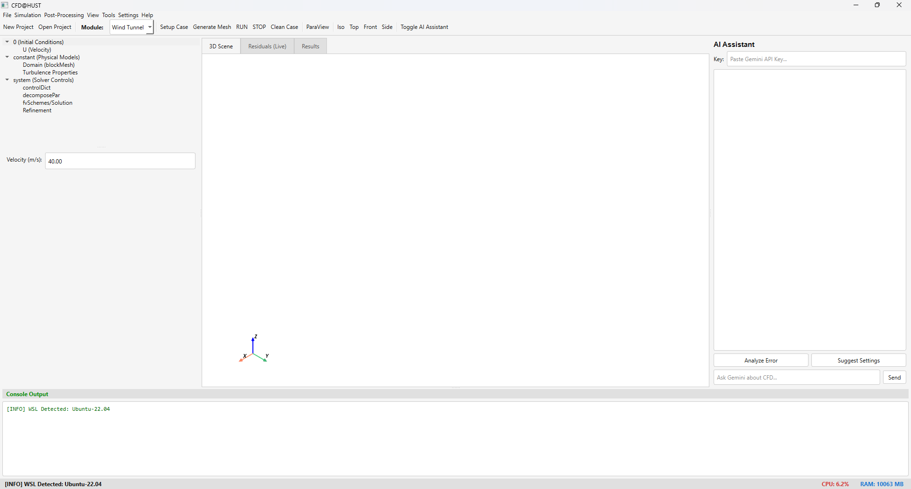

Phần mềm giao diện đồ họa (GUI) toàn diện tích hợp bộ giải OpenFOAM, được phát triển trên nền tảng Python, PyQt6 và PyVista. Tối ưu hóa quy trình từ nạp hình học, chia lưới, chạy tính toán đến hậu xử lý 3D.

Hệ thống được module hóa cao, cung cấp các bộ công cụ chuyên dụng cho từng lĩnh vực mô phỏng khác nhau.
Tối ưu hóa khí động học ô tô và mô hình. Hỗ trợ chia lưới snappyHexMesh, RANS/LES.
Mô phỏng thủy động lực học, tính toán đa pha (multiphase) bằng interFoam, hỗ trợ động lực học 6-DoF và tạo sóng.
Phân tích khí động học siêu âm cánh máy bay sử dụng bộ giải rhoCentralFoam và chia lưới blockMesh đối xứng.
Môi trường tùy biến đa dụng, cho phép tự do xây dựng hệ thống lưới động, đồng bộ điều kiện biên thông minh và thiết lập chuyên sâu.
Thiết kế hướng tới trải nghiệm người dùng tối ưu, CFD@HUST rút ngắn khoảng cách giữa nhà nghiên cứu và sức mạnh tính toán của OpenFOAM.
Tổ chức thư mục OpenFOAM chuẩn mực (0, constant, system). Dễ dàng kiểm soát file từ điển và cấu hình.
Hiển thị biểu đồ Live Residuals theo thời gian thực và tích hợp module 3D Scene Rendering mạnh mẽ từ PyVista.
Phân tích file log thông minh, tự động nhận diện điểm bất thường và cung cấp gợi ý gỡ lỗi nhanh chóng.
Giao tiếp mượt mà với lõi tính toán Linux thông qua Windows Subsystem for Linux (WSL), loại bỏ rào cản hệ điều hành.